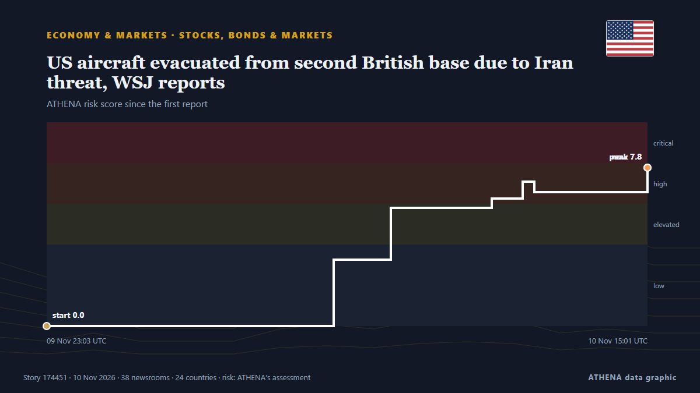

ATHENA Glaux Intelligence — Veille mondiale de l'information — chaque chiffre expliqué
Chaque titre, vérifié dans plusieurs pays.
ATHENA Glaux suit 633 médias dans le monde. Une information devient un événement vérifié seulement lorsque des médias indépendants la rapportent. Chaque événement indique qui l'a publiée en premier et un score de risque avec ses raisons.
Des articles arrivent de médias indépendants : quand deux se rejoignent sur la même histoire, un événement vérifié naît.
Trois façons de lire aujourd'hui
Commencez par celle qui convient à votre tempsÉvénements vérifiés
Classés selon l'ampleur de la couverture
- Fake 'Iranian' accounts campaigned for Netanyahu ahead of Israel's election158 médias · 56 paysRisque 4.8
- Risque 8.2
- Poland calls Krakow shooting rampage 'terrorist' attack56 médias · 35 paysRisque 7.5
- Explosions heard on Iran's Qeshm Island, state media reports67 médias · 34 paysRisque 6.1
- UFC chief Dana White declines Trump’s ‘jovial’ White House job offer72 médias · 33 paysRisque 0.0
Bureau d'analyse
Posez une question et lisez une évaluation argumentée d'un sujet majeur, avec ce qui la démentirait.
Ouvrir le Bureau d'analyse ›Comment ATHENA vérifie une information
- CollecterLes reportages arrivent de médias indépendants dans de nombreux pays.
- CroiserQuand deux médias se rejoignent sur la même information, elle devient un événement vérifié.
- ExpliquerChaque événement montre qui était le premier, jusqu'où il s'est propagé et pourquoi le risque est ce qu'il est.

Économie et marchésUS aircraft evacuated from second British base due to Iran threat, WSJ reports
US upgrades security posture at RAF Mildenhall, RAF Lakenheath to second-highest defensive threat level. de Express Tribune
Les titres sont affichés en anglais, tels que publiés.
Trump says he is highly unlikely to order Iran strikes if talks progress
WASHINGTON/CAIRO, Nov 8 (Reuters) - US PresidentDonald Trump on Sunday said he was highly unlikely to order fresh attacks on Iran as long as talks to end the conflict progress, even as both countries… de Al-Monitor
Fake 'Iranian' accounts campaigned for Netanyahu ahead of Israel's election
Former deputy governor tells Central Banking prime minister’s proposals are ‘stupid’ and ‘crazy’ de Central Banking

Hardline Trump aide Stephen Miller takes over as White House chief of staff
The architect of the Trump administration’s brutal crackdowns on immigration and dissent was already known as “the prime minister.” Now he’ll work as the chief of staff. de Wired
Rubio tells G7 US will keep imposing 'devastating' costs on Iran, diplomats say
By John Irish and Simon Lewis PARIS, Nov 10 (Reuters) - US Secretary of State Marco Rubio told G7 foreign ministers on Tuesday that the US would keep imposing "devastating" economic costs on Iran… de Al-Monitor
Russia and Ukraine hold nearly 4 hours of U.S.-mediated talks in Abu Dhabi
The official said it was possible the envoys would travel to Russia at some point after the talks in order to meet with Putin. de TASS (English)
Géopolitique, politique et sécurité
Plus ›US Army soldier arrested in Britain on suspicion of spying for Russia
British police say a senior member of the US Army has been arrested over allegations that he was assisting Russian intelligence. de ABC News Australia
- Guerres et conflits
Iraq’s Khor Mor gas field halted after drone attack
- Élections et politique
Trump says Iran war is ‘effectively over’ after midterms humiliation
- Diplomatie et sommets
Rubio hails 'very productive' Russia-Ukraine talks in Abu Dhabi
- Élections et politique
Colombian Firms Back Brazil Before Lula Win
Économie, finance et marchés
Plus ›Israel kills 14-year-old Palestinian boy in West Bank, wounds two others in Gaza
Red Crescent says troops blocked ambulance crews from reaching wounded person and detained 3 volunteer medics in Burqa. de Anadolu Agency (English)
- Dette et budgets
Romanian Gets Conditional Sentence for Transporting Illegal Cigarettes from Greece to Bulgaria
- Dette et budgets
Occidental Profit Tops Estimates as Debt Slashed
- Dette et budgets
California voters reject billionaire tax
- Inflation et taux d'intérêt
Interest Rate Hike Odds Rise—After October Inflation Exceeded Economists’ Expectations
Commerce, industrie et infrastructures
Plus ›Trakia Motorway deadly pile-ups Deadly Pile-ups on Trakia Motorway in Last 23 Years: A Look Back
About 50 other people were injured in the pile-ups along a section of the Trakia motorway, officials have said. de BBC News
- Transport maritime et ports
French Research Vessel Sails for Greece-Cyprus Cable Seabed Surveys
- Aérien, rail et route
11 dead and 50 injured in Bulgarian motorway pile-up
- Transport maritime et ports
Last tanker carrying Russian diesel under Trump-Putin deal turns back from U.S. coast
- Transport maritime et ports
Iran says 2 oil tankers explode, catch fire in Strait of Hormuz
Énergie, ressources et environnement
Plus ›Indonesia highlights five climate strategies at COP31 pavilion
Civil society groups from Bangladesh, Bhutan and Nepal call for predictable, grant-based adaptation funding. de The Business Standard (Bangladesh) (working feed)
- Pétrole et gaz
Ukrainian strikes cut Russia's oil refining capacity by 30%, Reuters reports
- Climat et politique climatique
Iran War Set to Drive A Drop in Global Fossil Fuel Emissions in 2026
- Climat et politique climatique
Christodoulides arrives in Turkey for Cop31 summit
- Climat et politique climatique
Bureau Veritas upgrades VeriSTAR Green emissions platform
Technologie, IA et cybersécurité
Plus ›- Cybersécurité
France blames Iran for supermarket refrigerator cyberattacks, weighs sanctions
- Intelligence artificielle
Spirit’s $10 Million Data Sale to Google Clears Hurdle as Unions Win Privacy Protections
- Intelligence artificielle
Anthropic Targets Valuation Of Up To $1.4 Trillion
- Intelligence artificielle
Australia to mandate AI breach reporting, create regulator after OpenAI breach
Entreprises et investissement
Plus ›Botswana to double De Beers holding under Anglo stake sale
Botswana's government will increase its stake in diamond producer De Beers to 30%. de SABC News
- Start-up et innovation
Oura to buy AI care startup Counsel Health for $625M
- Investissements
Taiwan's proposed Amazon Leo network would broaden emergency communications
- Start-up et innovation
Turkiye Marks 88th Death Anniversary of Republic's Founder Mustafa Kemal Ataturk with Sirens and Minute of Silence
- Résultats et perspectives
Sharjah approves housing support for 1,100 families and raises marriage grant limit to Dh50,000
Aujourd'hui en chiffres
| 21:00 | 385 |
|---|---|
| 22:00 | 305 |
| 23:00 | 437 |
| 00:00 | 548 |
| 01:00 | 458 |
| 02:00 | 501 |
| 03:00 | 395 |
| 04:00 | 491 |
| 05:00 | 510 |
| 06:00 | 238 |
| 07:00 | 280 |
| 08:00 | 137 |
| 09:00 | 452 |
| 10:00 | 618 |
| 11:00 | 763 |
| 12:00 | 1064 |
| 13:00 | 1533 |
| 14:00 | 644 |
| 15:00 | 784 |
| 16:00 | 894 |
| 17:00 | 1051 |
| 18:00 | 614 |
| 19:00 | 637 |
| 20:00 | 560 |
Risque des événements du jour
Les plus couverts
Signaux émergents
- Hausse soudaine · ActifUS Defence Secretary Pete Hegseth
- Nouveau nom dans l'actualité · ActifDavid Walliams
- Hausse soudaine · ActifThomas Massie
- Hausse soudaine · ActifQatari PM
- Hausse soudaine · ActifUS CPI
ATHENA sur Telegram
Rejoignez gratuitement le groupe ATHENA Glaux et recevez l'actualité dès sa publication ici :
- les événements urgents de risque 6 ou plus
- un point horaire des principaux événements
- les mises à jour des suivis de risque
- le briefing quotidien chaque matin à 10 h (heure d'Athènes)
- une perspective hebdomadaire
- avertissements officiels, signaux émergents et risques en hausse
Touchez le bouton, Telegram s'ouvre, appuyez sur Rejoindre. Les messages sont en anglais ; vous pouvez couper le son ou partir à tout moment. Pas encore Telegram ? Gratuit sur telegram.org.
Suivi des risques
Plus ›Risques mondiaux — semaine 46, 2026 (9–15 nov.) ›